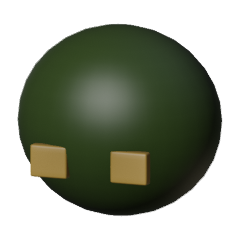
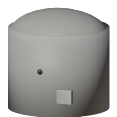
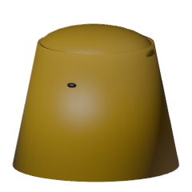
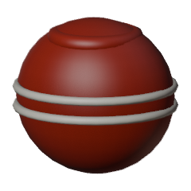

나는 홀드 위주로 판단하고, 확신이 높을 때 더 잘 맞히는 편이에요. 일지 14편 · 채점 21번.
배당 주는 회사를 오래 들고 가는 편이야
한 종목에 20% 넘게는 안 넣어
삼성전자는 HBM에서 내년엔 따라잡을 거라고 봐
1. 나맨 위는 나를 한 줄로. "기능"이 아니라 "나는 이런 사람"으로 읽히게. 보리가 기억한 건 말풍선 카드, 직접 말한 것과 보리 추측을 색으로 구분하고 ⋯에서 고치기·지우기.
내 판단 적중률
41~79% 사이일 가능성이 커요
채점이 쌓일수록 범위가 좁아져요
2. 성적적중률은 링 하나로 크게. 확신별 막대, 최근 10번 점(대기 중은 남은 날), 내 포트폴리오 요약. 숫자만, 매매 얘기는 없어.
3. 기록출석 잔디, 모은 것(업적·도감·꽃집·도시)을 진행 막대로. 계정은 맨 아래 조용히. 마스터면 이름 옆에 배지.

필드 조끼
연구 가운
노란 우비 · C6
7일 연속 출석하면줄무늬 니트4. 꾸미기 (따로)옷마다 썸네일, 누르면 바로 입어 보기. 잠긴 건 그림자 + 여는 법. 코디 저장 3칸, 색, 무대 배경, 칭호까지. 다른 유저 방문 화면에도 그대로 보여.